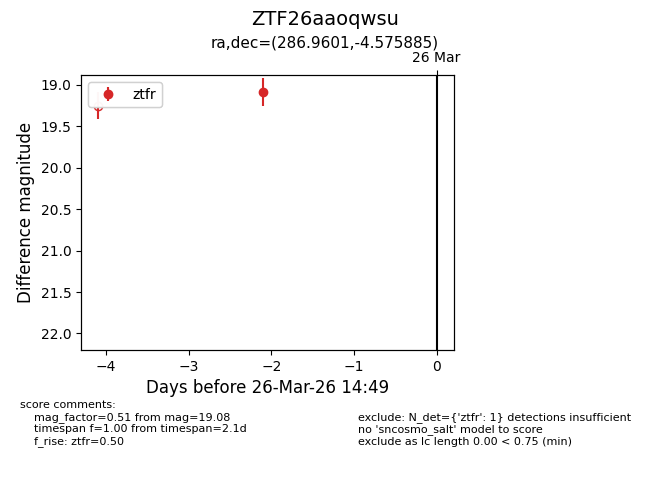
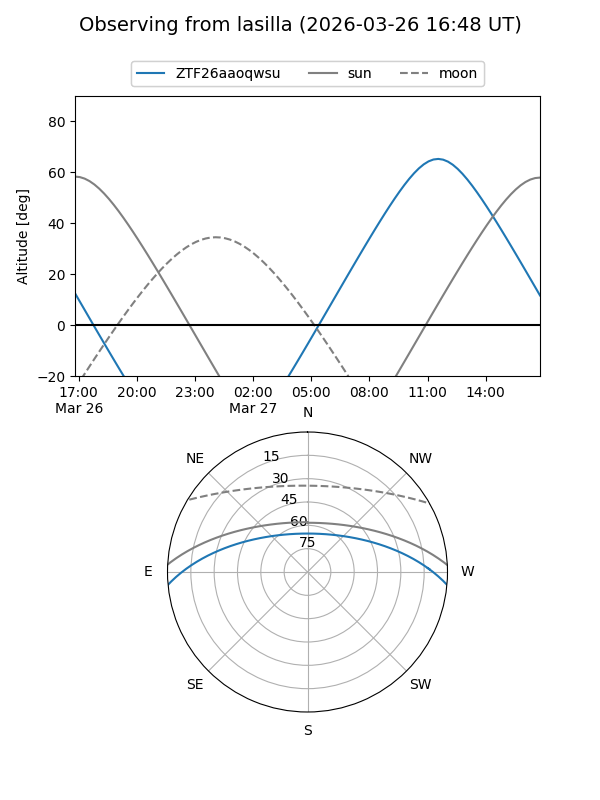
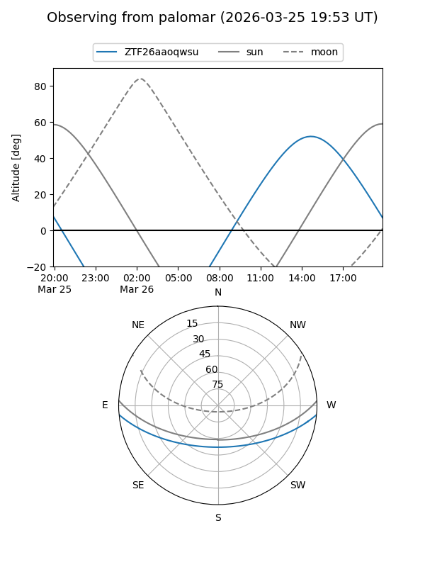

ZTF26aaoqwsu
Target ZTF26aaoqwsu at 2026-03-26 14:51
Aliases and brokers:
FINK: link
Lasair: link
ALeRCE: link
alt names
ZTF26aaoqwsu (ztf,fink_ztf)
Coordinates:
equatorial (ra, dec) = 286.9601,-4.57588
equatorial (HMS+DMS) = 19:07:50.42,-04:34:33.19
galactic (l, b) = (30.7144,-5.72859)
Flags:
Photometry:
last ztfr=19.08
1 ztfr detections
Lightcurve

Visibility


Additional plots